Alpha Shapes¶
Contents
This is the Frei0r filter alphaspot
see also Frei0r-alphaspot readme file
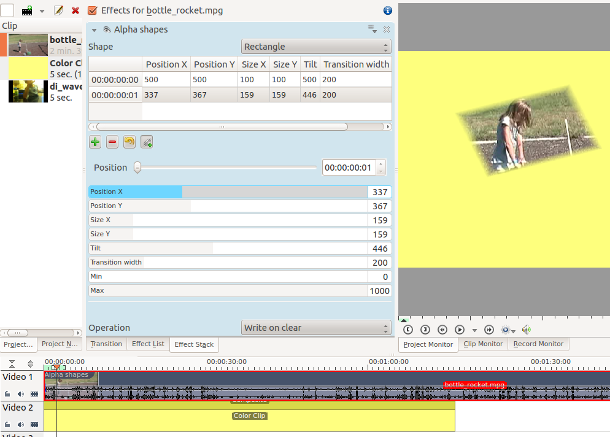{kind=link}
Use this in combination with a Composite Transition to place areas of transparency onto an overlaying clip such that the underlying clip shows through in places defined by geometric shapes. By default, the area of transparency is outside the shape that is drawn. Inside the shape is an area of opacity where the overlaying clip is visible.
Shape Options¶
This controls the shape of the area of opacity that the effect will create.
Shape options are Rectangle, Ellipse, Triangle, Diamond.
Tilt¶
This controls the angle the shape appears on the screen. The units are in 1000ths of a full rotation. eg a factor of 250 is one-quarter of a circle turn and 500 is a 180 turn. ie 1000 tilt units = 360 degrees
Position X and Y¶
This defines the position of the shape on the screen
Size X and Y¶
Defines the size of the shape
Transition Width¶
Defines the width of a border on the shape where the transparency grades from inside to outside the shape
Operations¶
Operations define what is to happen when you have more than one Alpha effect on the clip.
Operations are Write On Clear, Max, Min, Add, Subtract.
Write On Clear = existing alpha mask is overwritten
Max = maximum( existing alpha mask, mask generated by this filter)
Min = minimum(existing alpha mask, mask generated by this filter)
Add = existing alpha mask + mask generated by this filter
Subtract = existing alpha mask - mask generated by this filter
See the worked examples below to understand what these operations do.
Min and Max and Operations - Worked examples¶
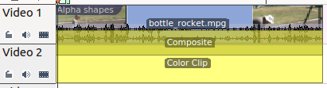These examples are performed on a simple composite transition with a video file on Video track 1 and a color clip (yellow) on Video track 2.
Alpha shapes effect draws areas of opacity onto the image. The addition of this filter (with the default settings of Min = 0 and Max =1000) makes the whole frame transparent except for an area of opaqueness where the top image can be seen.
The Max and Min controls adjust the opacity of the image inside and outside of the shape respectively. A setting of 1000 is 100% opaque. A setting of zero is 0 % Opaque (ie 100% Transparent).
Max control*
The Max control regulates how opaque it is inside the shape. At Max= 1000 it is completely opaque inside the shape and nothing of the background image shows through
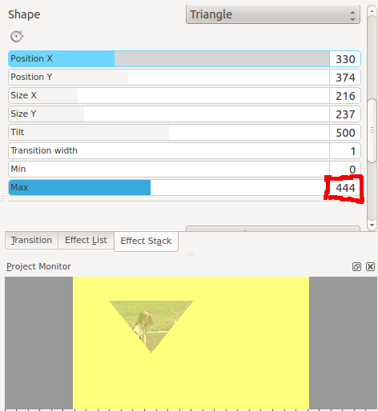At Max = 500 it is semi-transparent inside the shape and you can see the background bleeding through.
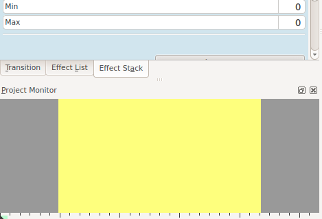At Max = 0 inside the shape is completely transparent - the same as the rest of the foreground image - and you can see all background.
Min Control*
The Min control adjusts how opaque it is outside the shape. When Min = 0 outside the shape is completely transparent (opacity of zero) and at Min = 500 we see something of the foreground appears outside the shape.
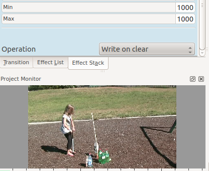At Min = 1000 the opacity outside the shape is 100% and nothing of the background appears.
Combining Alpha Shapes - Operations*
In this example, I have a Triangle Alpha shape defined as shown and this is at the top of the effect stack with operation write on clear
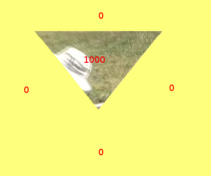Which appears like this on its own
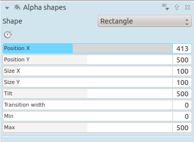And I have rectangle alpha shape as shown which is at the bottom of the effect stack. Note the Max = 500 - i.e. 50% opacity inside the rectangle
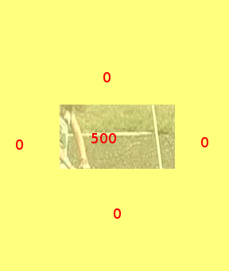Which appears like this when on its own.
In the images below I demonstrate the effect of different alpha operations on the rectangle alpha shape.
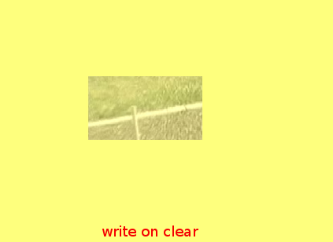Write on Clear - the existing alpha mask is overwritten
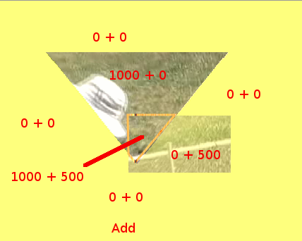add = existing alpha mask + mask generated by this filter.
Note that areas with 1000 + 500 opacity would be 150% opaque. But you cant get 150% opaque so they look the same as the 100% opaque areas
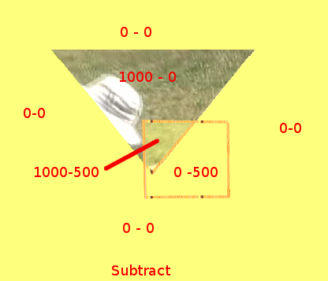subtract = existing alpha mask - mask generated by this filter
Note that areas with 0 - 500 opacity would be minus 50% opaque. But you cant get -50% opaque so they look the same as the 0% opaque areas
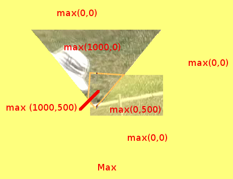max = maximum( <existing alpha mask> , <mask generated by this filter>)
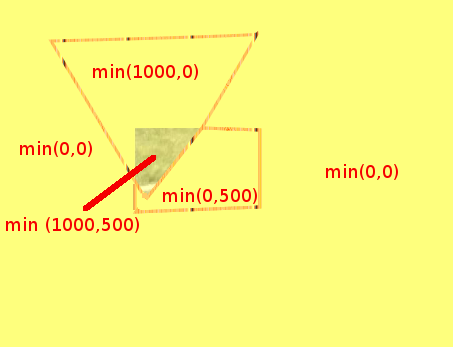min = minimum( <existing alpha mask> , <mask generated by this filter>)